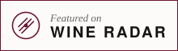

Wine Radar
Crama dumneavoastră pe Wine Radar
Fiecare producător din regiune are o pagină gratuită. Un profil Plus adaugă ceea ce cer cel mai des vizitatorii. Nu vă urcă niciodată mai sus în listele sau în clasamentele noastre.
Mereu gratuit
- Pagină proprie cu hartă, date și indicații de drum
- Note din ghiduri și linkuri către presă
- Prezență pe paginile satelor, zonelor și soiurilor
- Inclus în planificatorul de călătorii
Plus
€149 pe an
- Fotografiile dumneavoastră
- Program de vizitare și ore de degustare
- Un buton „rezervă o degustare”
- Evenimente și sărbători ale culesului
- Un link către magazinul dumneavoastră online
- O mențiune în newsletterul nostru săptămânal
Ceva nu e corect pe pagina dumneavoastră? Spuneți-ne și corectăm gratuit. hello@wineradar.net
Badge

<a href="https://wineradar.net/austria/burgenland/winery/your-winery/"><img src="https://wineradar.net/assets/featured.svg" alt="Featured on Wine Radar" width="220" height="64"></a>